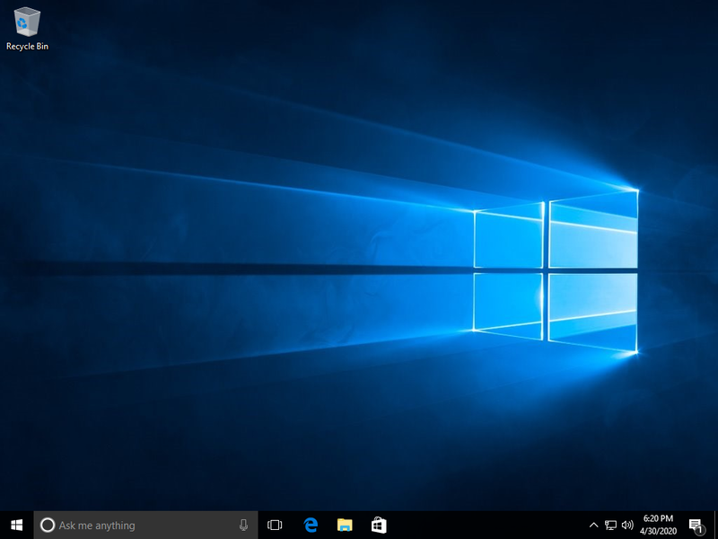
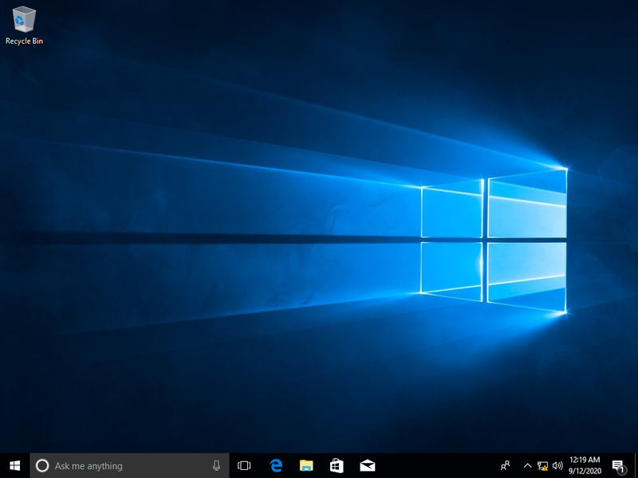
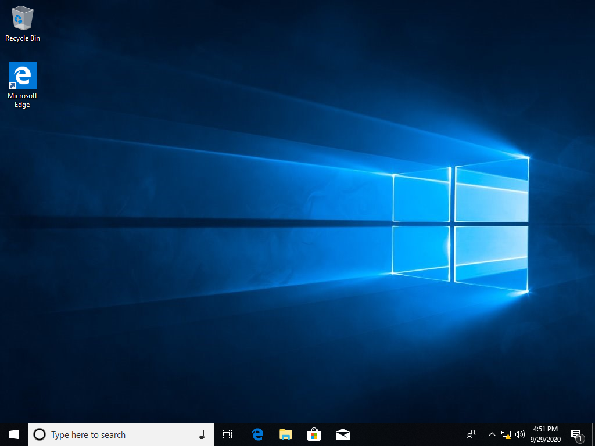
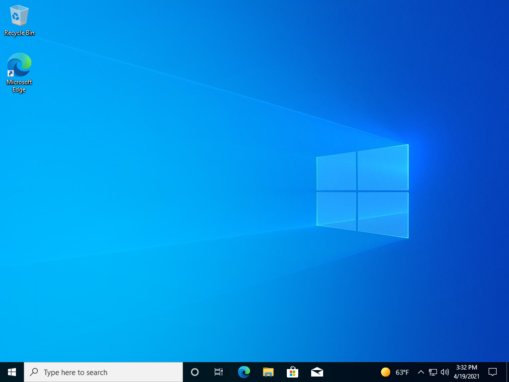

Каталог Windows 10
На этой странице, вы можете скачать абсолютно все основные версии Windows 10!
На сайте абсолютно оригинальные версии Windows 10,
никаких активаторов, и каких либо реклам, и софта!
Все образы были скачаны из архивных сайтов Microsoft.
Windows 10 1607 (Pro/Home) (x64) (Только Русский)

Archive.org
Mediafire
PixelDrain
Windows 10 1709 (Pro/Home) (x64) (Только Русский)

Archive.org
Mediafire
PixelDrain
Windows 10 1809 (Pro/Home) (x64) (Только Русский) (Обновления по Март 2019)

Archive.org
Mediafire
Mega
PixelDrain
Windows 10 20H2 (Pro/Home) (x64) (Только Русский) (обновления по Декабрь 2020)

Archive.org
Mediafire
PixelDrain
Каталог Windows 10
Каталог Windows 10
Просмотр полной версии страницы
доступен только в ПК версии и в окнах шириной 1200 пикселей и выше.